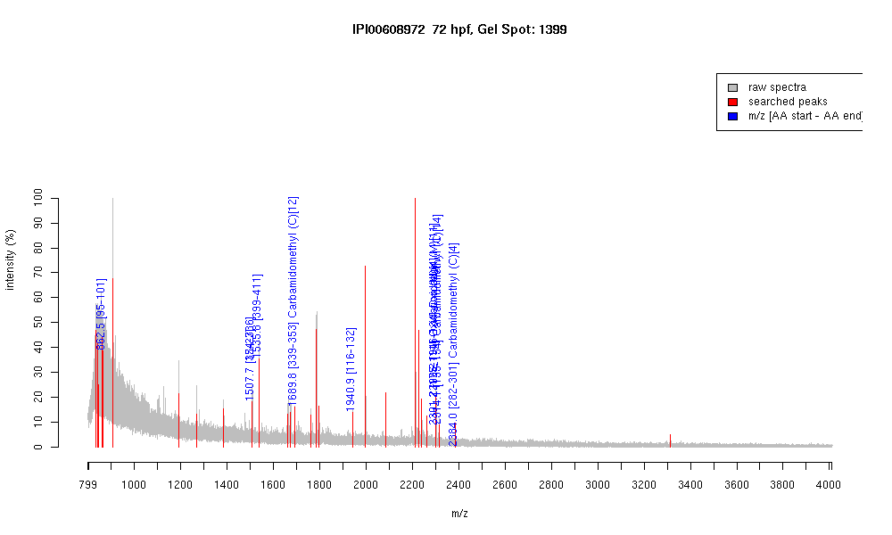

| Name | PREDICTED: similar to semaphorin 4G |
|---|---|
| MW | 68503.4 |
| PI | 6.17 |
| Mascot Protein Score | 78 |
| Masses (matched / unmatched) | 9 / 22 |

| Peptide | MZ (calc) | MZ (observed) | Error (DA) | Error (PPM) | Start | Stop | Modifications |
|---|---|---|---|---|---|---|---|
| WSTNVQK | 862.4417 | 862.4783 | 0.0366 | 42 | 95 | 101 | |
| RGCSNITSFVMHR | 1507.7257 | 1507.6985 | -0.0272 | -18 | 15 | 27 | |
| RGCSNITSFVMHR | 1507.7257 | 1507.6985 | -0.0272 | -18 | 324 | 336 | |
| CYAVENSVWVPIR | 1535.7675 | 1535.7858 | 0.0183 | 12 | 399 | 411 | |
| AVMAGDDVLLQCEIR | 1689.8298 | 1689.8169 | -0.0129 | -8 | 339 | 353 | Carbamidomethyl (C)[12] |
| DIQTAFNGPFMELQDSK | 1940.9059 | 1940.9393 | 0.0334 | 17 | 116 | 132 | |
| DIQTAFNGPFMELQDSKWR | 2299.0813 | 2299.1851 | 0.1038 | 45 | 116 | 134 | Oxidation (M)[11] |
| HPLMSTQIQPVEGRPLLLQK | 2301.2747 | 2301.1599 | -0.1148 | -50 | 175 | 194 | Oxidation (M)[4] |
| EYTGKVPDPRPGSCITDEHR | 2314.0881 | 2314.145 | 0.0569 | 25 | 135 | 154 | Carbamidomethyl (C)[14] |
| YTSCYDCVFARDPLCGWDGR | 2383.9893 | 2383.9795 | -0.0098 | -4 | 282 | 301 | Carbamidomethyl (C)[4] |